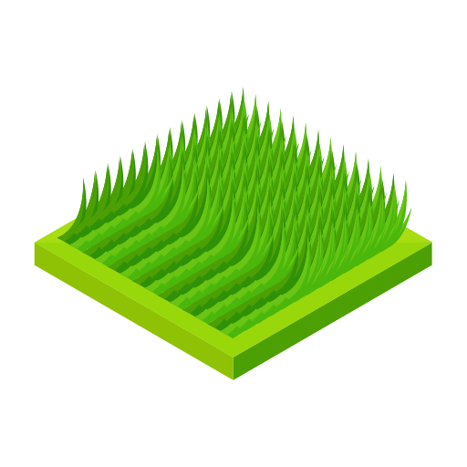

Pencemaran Air
Terjadi akibat limbah industri dan rumah tangga yang dibuang ke sungai atau laut tanpa pengolahan.
Baca Selengkapnya
Pencemaran Udara
Disebabkan oleh asap kendaraan, pabrik, pembakaran hutan, serta penggunaan bahan kimia beracun.
Baca Selengkapnya

Pencemaran Tanah
Disebabkan oleh pembuangan sampah plastik, limbah kimia, dan pestisida yang mencemari tanah.
Baca Selengkapnya